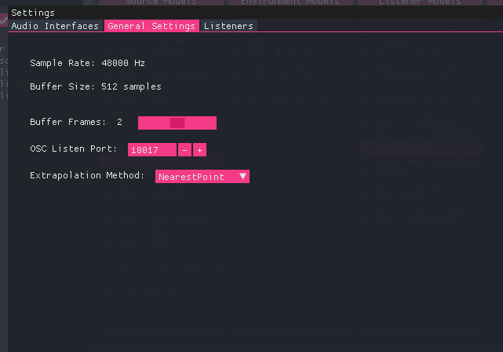
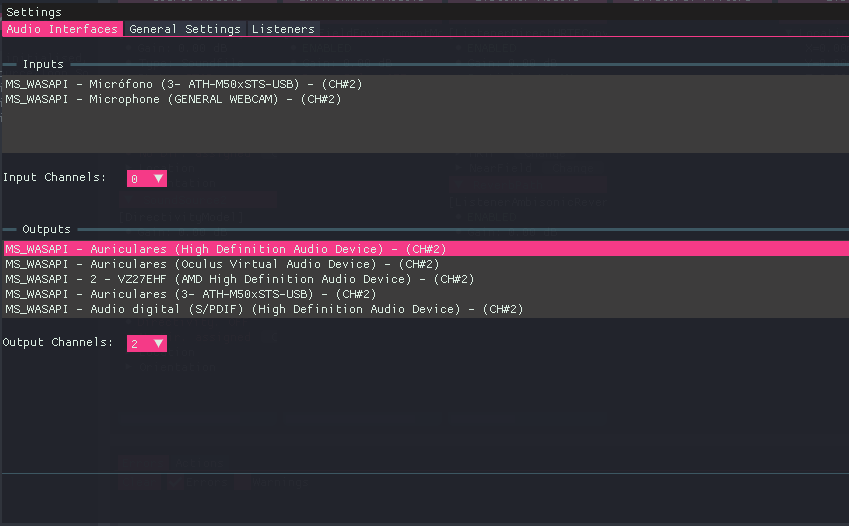
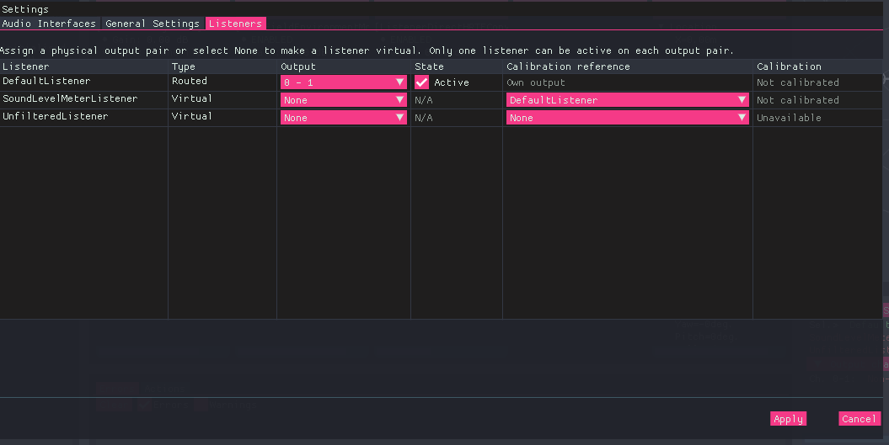
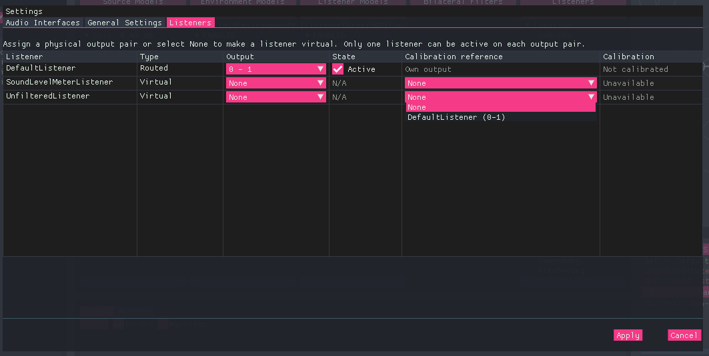
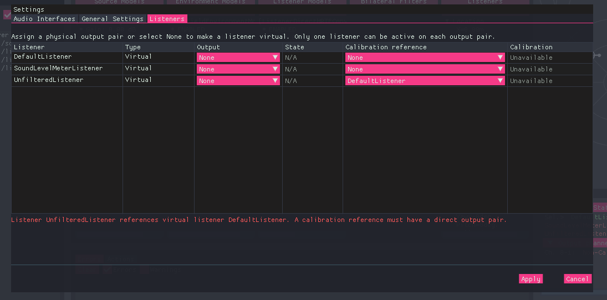

Settings Menu
The Settings menu allows users to view and configure application parameters, audio interfaces and listener output routing. It contains three tabs:
- Audio Interfaces: Select the input and output devices and the number of available channels.
- General Settings: View and configure global application parameters.
- Listeners: Assign listeners to physical output pairs, control their Active/Standby state and configure calibration references for virtual listeners.
General settings
This section displays global parameters defined in the settings.json configuration file. Some of these parameters can be modified directly from the interface, while others are read-only.

BeRTA Renderer - General Settings menu
Parameters
| Parameter | Description | Editable |
|---|---|---|
| Sample rate | Defines the sampling rate used by the application. All loaded audio files and audio devices must operate at this same rate. | ❌ No |
| Buffer size | Number of frames per processing block. Larger values increase latency but provide more processing time, enabling more complex simulations (e.g., reverberation). | ❌ No |
| Buffer Frames | Parameter related to the underlying audio backend (e.g., RtAudio on Windows). It defines the number of internal buffers used before sending audio to the output device. The operating system will try to honor this value, but it is not guaranteed. Higher values may improve stability but increase latency. | ✅ Yes |
| OSC Listen Port | UDP port where BeRTA listens for incoming OSC messages. | ✅ Yes |
| Extrapolation Method | Defines the extrapolation strategy used during interpolation when loading HRTFs or directivity data. Available options: • ZeroInsertion: Missing data points are filled with zeros. This method avoids introducing artificial information but may produce discontinuities. • NearestPoint: Uses the closest available data point. This provides smoother results but may introduce spatial bias. |
✅ Yes |
Audio Interfaces
This section allows selecting the audio devices used for input and output.
Two lists are displayed:
- Available input devices
- Available output devices
Each device entry includes:
- Audio backend (e.g., ASIO, WASAPI)
- Device name
- Number of available channels
Info
Both input and output devices must use the same audio backend/API. This is a limitation imposed by the underlying audio library (audio backend).

BeRTA Renderer - Audio Interfaces menu
Input Interface
The input interface is used for line-in sound sources.
Input Channels
The Input Channels dropdown defines how many channels from the selected input device will be available for use.
- Channels are assigned sequentially starting from 1
- If set to
0, no input channels are used - If set to
N, the firstNchannels are enabled
When creating a line-in source, the parameter linein_channel specifies which of these enabled channels is used.
Example:
- Device with 4 input channels
- Input Channels set to
2 - Available channels for use: 1 and 2
- Valid
linein_channelvalues:1or2
Output Interface
The output interface defines the audio device used for playback.
Output Channels
The Output Channels dropdown determines how many physical output channels are available for listener routing.
- Output channels are enabled in stereo pairs: 2, 4, 6, etc.
- Output channel numbering starts at 0. Four enabled channels provide pairs 0–1 and 2–3.
- Each pair can reproduce the signal of one active listener at a time.
- Several listeners may share an assigned pair, but only one of them can be Active.
- Virtual listeners do not use physical output channels.
The number of output pairs limits how many listeners can be heard simultaneously. It does not limit the total number of listeners in the scene.
Example:
With 4 output channels enabled, two listeners can be heard simultaneously through separate pairs. Additional listeners may share those pairs in Standby or remain virtual.
Configure these assignments in the Listeners tab described below.
Listeners
The Listeners tab configures how existing listeners connect to the audio interface and how they obtain the calibration used to estimate sound levels. Each listener produces its own stereo signal from its position and orientation in the scene. The output configuration determines whether that signal is sent to a physical output pair, kept in Standby or used only for virtual measurements. This tab configures existing listeners. It does not create or delete them.

BeRTA Renderer - Listener menu
Table columns
| Column | Description |
|---|---|
| Listener | Identifier of the existing listener. Read-only in this tab. |
| Type | Routed or Virtual, determined by the output assignment. |
| Output | Physical stereo pair, or None (Virtual) to remove the assignment. |
| State | Checkbox controlling Active or Standby for Routed listeners. Virtual listeners display N/A. |
| Calibration reference | Own output for Routed listeners. For Virtual listeners, another Routed listener or None. |
| Calibration | Availability of the calibration resolved through the listener's own output or its reference. |
Listener types
The Type column is determined automatically by the Output assignment, and can be Routed or Virtual.
Routed
A Routed listener has a physical stereo output pair assigned to it, such as 0 - 1.
It can be:
- Active: Its signal is sent to the assigned output pair.
- Standby: The assignment is retained, but its signal is not sent to the physical output.
A Routed listener uses the calibration of its own assigned output pair when calculating its theoretical sound level in dBSPL.
Virtual
A Virtual listener has no physical output assignment. Its Output is None, and its State is N/A. Its signal remains available for digital level measurements in dBFS. It can also provide theoretical dBSPL levels if it has a valid calibration reference.
Virtual listeners are useful for evaluating the signal at additional positions in the scene without using more physical output channels.
Standby and Virtual have different meanings
A Standby listener retains a physical output assignment and can be activated later. A Virtual listener has no physical output assignment. Neither state disables the calculation of the listener's own signal levels.
Assigning a physical output pair
- Locate the listener in the table.
- Open its Output dropdown.
- Select an available pair, such as
0 - 1or2 - 3. - Enable the State checkbox if the listener should be Active.
- Press Apply.
Points to note:
- The available pairs depend on the output channel count selected in Audio Interfaces.
- Assigning a different pair puts the listener into Standby. Activate it explicitly when you want it to take control of that pair.
- Assigning a physical output also removes any previous calibration reference: Routed listeners use their own output pair.
Sharing an output pair
Several Routed listeners may be assigned to the same output pair, but only one can be Active at a time. When you activate one listener, the other listeners assigned to that pair automatically change to Standby in the table.
When you change this in the interface, you must click Apply for the change to take effect.
For example:
| Listener | Output | State |
|---|---|---|
| A | 0 - 1 | Active |
| C | 0 - 1 | Standby |
Points to note:
- Activating C changes A to Standby. After applying the changes, channels 0–1 reproduce C's signal.
- Listeners assigned to different pairs can be Active simultaneously. Signals from listeners sharing a pair are not mixed together.
- If all listeners assigned to a pair are in Standby, none of their signals is sent to that pair.
Configuring a virtual listener
- Open the listener's Output dropdown.
- Select None (Virtual).
- If theoretical dBSPL measurements are required, select a Routed listener in Calibration reference.
- Otherwise, leave the reference as None.
- Press Apply.
Points to note:
- Selecting None (Virtual) removes the physical assignment, deactivates output routing and clears the listener's previous calibration reference. Choose the desired reference afterwards.
- The reference dropdown lists eligible Routed listeners together with their assigned pairs, for example
A (0-1). A listener cannot reference itself or another Virtual listener. - A Virtual listener without a calibration reference is a valid configuration. Its dBFS measurements remain available, but its theoretical dBSPL level is unavailable.

BeRTA Renderer - Listener menu - Virtual listener's Calibration reference dropdown
How calibration references work
Calibration belongs to a physical output pair. A Virtual listener obtains its calibration through a reference to a Routed listener:
Virtual listener B → Routed listener A → A's current output pair → calibration
B uses its own signal level and the calibration associated with A's output pair. It does not use A's signal level.
The theoretical level is calculated as:
listener level in dBSPL = listener level in dBFS + calibration offset in dB
For more information about establishing the calibration, see Calibration.
The reference follows the listener
If A moves from channels 0–1 to channels 2–3, B's reference still points to A. Once the change is applied, B uses the calibration of channels 2–3.
If the new pair is not calibrated, B's theoretical dBSPL measurement becomes unavailable until calibration is provided.
The referenced listener may be in Standby
A does not need to be Active to provide a calibration reference.
For example:
| Listener | Type | Output | State | Calibration reference |
|---|---|---|---|---|
| A | Routed | 0 - 1 | Standby | Own output |
| C | Routed | 0 - 1 | Active | Own output |
| B | Virtual | None | N/A | A |
In this configuration:
- Channels 0–1 reproduce C's signal.
- A's theoretical dBSPL level uses A's signal and the calibration of channels 0–1.
- B's theoretical dBSPL level uses B's signal and the same calibration.
- B continues to reference A, even though C is currently audible.
Converting a referenced listener into Virtual
A Virtual listener cannot provide a calibration reference to another Virtual listener.
If you change A to Virtual while B still references A, the GUI reports an invalid configuration. Before applying it, change B's reference to another Routed listener or select None.
Understanding the Calibration column
| Displayed value | Meaning |
|---|---|
| Calibrated | The resolved output pair currently has calibration data. |
| Not calibrated | An output pair is resolved, but it has no calibration data. |
| Unavailable | No output pair can be resolved, for example because a Virtual listener has no calibration reference. |
| Requires calibration | An output device, backend or channel-count change is pending in Settings. Calibration must be checked after applying the new output configuration. |
Points to note:
- This column describes calibration availability. It does not indicate whether a listener is audible or whether a current signal measurement is available.
- Routing may be configured before calibration is performed.
- Calibration is needed to convert digital levels into estimated dBSPL levels.
- The Listeners tab selects the calibration source; it does not perform the calibration procedure.
Listener levels and physical output levels
There are three distinct sound-level measurements:
| Measurement | Signal used | Calibration | Physical safety limiter |
|---|---|---|---|
| Listener dBFS | The listener's own digital signal | Not required | Not applied |
| Listener theoretical dBSPL | The listener's own digital signal | Own output pair or referenced listener's pair | Not applied |
| Output dBSPL | Signal sent to the physical output pair | That output pair's calibration | Included |
The Active/Standby state controls physical routing. It does not change the meaning of the listener's own dBFS or theoretical dBSPL measurements.
A Virtual listener's theoretical level may exceed the safety limit because its signal is not being reproduced through a physical output.
Example:
Assume channels 0–1 have a calibration offset of 100 dB and a physical safety limit of 80 dBSPL.
- Active Listener A produces -15 dBFS: its theoretical level is 85 dBSPL.
- The physical limiter reduces A's output to 80 dBSPL.
- Virtual Listener B references A and produces -10 dBFS: B's theoretical level is 90 dBSPL.
B's result remains 90 dBSPL because the physical limiter is not applied to virtual measurements.
These measurements can be queried using the OSC control commands:
/control/getListenerSoundLeveldBFS/control/getListenerSoundLeveldBSPL/control/getOutputSoundLeveldBSPL
Applying changes and resolving errors
Changes made in the table are pending edits until you press Apply. This includes automatic changes to other listeners, such as placing them in Standby when you activate a listener sharing their pair.
- Apply validates the routing against the selected output channel count and applies the configuration. The Settings window closes after a successful application.
- Cancel discards pending listener edits and closes the window.
An invalid routing configuration displays an error below the table and prevents the changes from being applied.
Common causes include:
- An assigned pair is no longer available after reducing the output channel count.
- A Virtual listener still references a listener that has been changed to Virtual.
If you reduce the number of output channels in Audio Interfaces, review the Listeners tab before applying. Reassign listeners whose pairs are no longer available, or convert them to Virtual and review their calibration references.

BeRTA Renderer - Listener menu - Calibration error
Session configuration
Applying listener changes updates the running application. It does not automatically save those changes to settings.json.
Listener output configuration can also be set using /control/setListenerOutput. See the OSC control documentation for its arguments and behaviour.